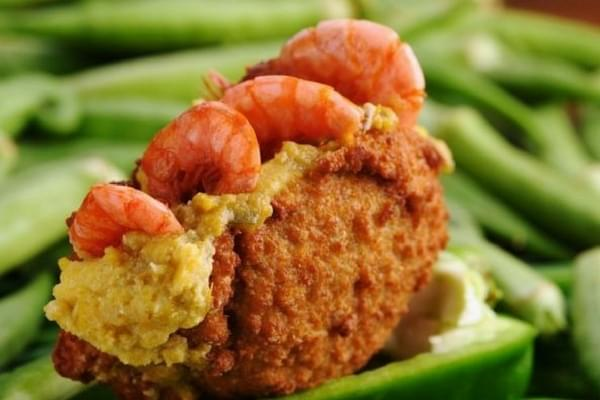

 Este es un plato típico de la provincia de Bahía ubicada al noreste de Brasil. Su origen probablemente viene de África y se trasladó al país a través de los esclavos, está relacionado con tradiciones religiosas de ese continente. Se trata de un pan grueso, hecho a partir de frijoles y cebolla, relleno con langostinos y camarones, y servido en salsa de la región, todo frito. Este plato se come a cualquier hora del día en todas las regiones del país.